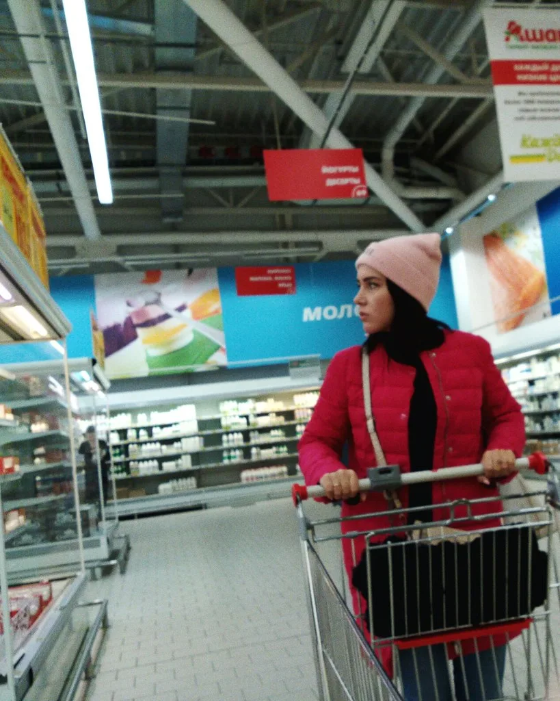

홈플러스 회생절차 재개…법원, 폐지결정 취소
서울회생법원이 대형마트 홈플러스의 기업회생절차 폐지 결정을 취소하고, 회생계획안 가결 기간을 법정 최종 기한인 9월 4일까지 연장하기로 했다. 지난달 자금난으로 벼랑 끝에 몰렸던 홈플러스는 이번 결정으로 파산 위기를 일단 넘기게 됐으며, 휴업 중이던 전국 매장들의 영업 재개 논의에도 속도가 붙을 전망이다.
법원의 이번 결정을 이끌어낸 것은 메리츠금융그룹의 긴급 자금 지원이다. 메리츠증권과 메리츠캐피탈, 메리츠화재 등 메리츠금융 계열 3사는 각각 이사회를 열어 홈플러스에 2000억원 규모의 긴급운영자금(DIP 대출)을 전액 지원하기로 최종 의결했다. 이번 대출 지원은 홈플러스의 대주주인 MBK파트너스와 김병주 MBK 회장이 대출금 전액에 대해 연대보증을 제공하는 것을 전제로 이뤄졌다. DIP 대출은 회생절차를 밟고 있는 기업이 영업을 지속할 수 있도록 법원 허가를 받아 우선적으로 상환받는 조건으로 실행되는 자금으로, 회생기업의 급한 불을 끄는 데 흔히 활용되는 방식이다.

앞서 법원은 운영자금 부족으로 회생계획 수행 가능성이 없다는 이유로 회생절차 폐지를 결정한 바 있다. 그러나 메리츠 측의 자금 지원으로 이러한 전제가 해소되자, 법원은 홈플러스 측이 제기한 즉시항고에 정당한 이유가 있다고 판단해 폐지 결정을 취소했다. 이에 따라 회생계획안을 채권자 등의 동의를 받아 가결시킬 수 있는 기간도 법이 허용하는 최종 시한인 9월 4일까지로 늘어났다.
홈플러스는 지난 3월 기업회생절차를 신청한 이후 협력업체 납품 차질과 소비자 불안 등으로 어려움을 겪어 왔으며, 그 여파로 대구경북 지역 매장을 포함해 전국 67개 매장이 문을 닫은 상태다. 매장이 잇따라 휴업에 들어가면서 인근 상권과 납품업체, 입점 소상공인들까지 매출 타격을 호소해 왔고, 일부 직원들의 고용 불안도 함께 거론돼 왔다. 회사 측은 긴급운영자금이 실제로 유입되는 대로 휴업 매장들의 영업을 순차적으로 재개한다는 방침을 세우고 준비 작업에 분주한 모습이다.

다만 67개 매장 전체의 영업 재개 시점은 아직 확정되지 않았다. 자금 유입 절차와 매장별 운영 여건 점검 등에 시일이 걸릴 수 있어, 완전한 정상화까지는 다소 시간이 필요할 것이라는 전망이 나온다. 유통업계에서는 이번 사태가 사모펀드의 대형 유통업체 인수 이후 재무구조 관리가 실패할 경우 협력업체와 소비자, 임직원까지 광범위한 피해로 이어질 수 있다는 점을 보여준 사례로도 거론되고 있다.
홈플러스가 극적으로 파산 위기를 넘긴 만큼, 앞으로 관건은 실제 회생계획안이 채권자 동의를 얻어 가결되고 매장 영업이 정상 궤도에 오르는지 여부다. 9월 4일이라는 최종 시한이 설정된 만큼, 남은 기간 동안 자금 집행과 매장 재개 상황이 어떻게 전개될지에 유통업계와 소비자들의 시선이 쏠리고 있다.
일단 최악의 시나리오였던 파산은 피했지만, 회생계획안이 실제로 채권자들의 동의를 얻어 가결되지 못하면 절차가 다시 좌초될 가능성도 남아 있다. 이 때문에 업계에서는 메리츠의 자금 지원이 일회성 응급조치에 그치지 않고 매장 영업 정상화와 채권자 설득으로 이어질 수 있을지가 앞으로 몇 달간의 최대 관전 포인트가 될 것으로 보고 있다.